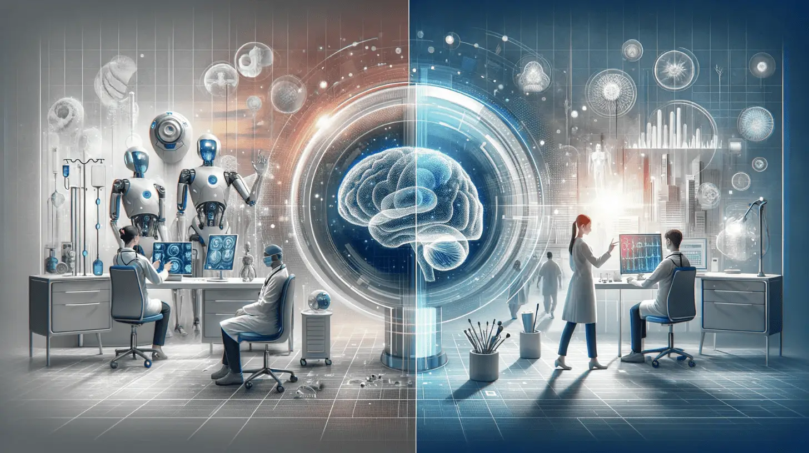

Плюсы и минусы ИИ в медицине
Технологии помогают, но создают новые вызовы

Искусственный интеллект уже спасает жизни: помогает ставить диагнозы, ускоряет создание лекарств, делает операции безопаснее. Но он же создаёт этические и юридические проблемы.
Плюсы ИИ в медицине
- Скорость: анализ сотен снимков в минуту
- Точность: находит рак на ранних стадиях
- Доступность: удалённая диагностика для отдалённых регионов
- Ускорение создания лекарств: 10-15 лет → 1-2 года
- Точность операций: роботы с точностью до 0,1 мм
- Персонализированная медицина: подбор лечения под генетический профиль
- Работа 24/7 без усталости
Минусы и риски
- Юридическая ответственность: кто виноват, если ИИ ошибётся?
- Качество данных: нейросеть учится на ошибках, если данные были плохими
- Высокая стоимость: робот da Vinci стоит миллионы долларов
- Кибербезопасность: взлом ИИ-системы может стоить жизни
- Недоверие врачей: многие боятся, что ИИ заменит их
- Цифровое неравенство: богатые клиники получат лучший ИИ
- «Чёрный ящик»: непонятно, почему нейросеть приняла такое решение
Роль информационной безопасности
Медицинские ИИ-системы обрабатывают огромные массивы персональных данных. Их нужно защищать от утечек, подмены и взлома. Информационная безопасность — ключевой элемент внедрения ИИ в здравоохранение. Хакеры могут подменить МРТ-снимок или анализ, и ИИ поставит неверный диагноз. Защита медицинских данных — наша будущая работа.